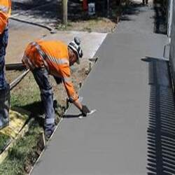
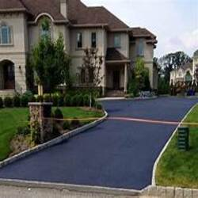
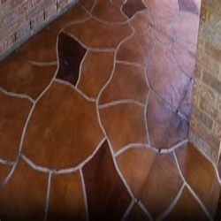

-

Signs to Replace Your Driveway Apron
Posted on July 26, 2023 by Abby Harris
Do you have a cracked or crumbling driveway? Replacing your driveway apron–the area where your residential driveway meets the street pavement–calls for some careful decision-making. From choosing a durable Houston concrete supply to hiring a team skilled in production and … Continue reading →
Posted in Concrete Repair or Replacement | Comments Off on Signs to Replace Your Driveway Apron
-

Houston Ready Mix Concrete: Replacing Concrete Steps
Posted on November 21, 2022 by Phoebee Johnson
Concrete steps are a great option for both residential and commercial use. They are incredibly durable and can be designed to match nearby walkways for a cohesive look. However, there may come a time where you need replace your concrete … Continue reading →
Posted in Concrete, Concrete Repair or Replacement, Ready Mix Concrete | Comments Off on Houston Ready Mix Concrete: Replacing Concrete Steps
-

Pouring Houston Ready Mix Concrete Over Existing Slabs
Posted on November 21, 2022 by Phoebee Johnson
If you have an old slab of concrete that you want to renew, you might wonder if it’s possible to simply pour new Houston ready mix concrete over the old concrete. This is certainly possible, though there are several things … Continue reading →
Posted in Concrete, Concrete Repair or Replacement, Ready Mix Concrete | Comments Off on Pouring Houston Ready Mix Concrete Over Existing Slabs
-

Houston Concrete Supplier for Concrete Overlays
Posted on January 21, 2022 by Phoebee Johnson
If you have aging concrete, talk to your Houston concrete supplier about your options. In many cases, if you don’t want to completely replace your concrete slabs, an overlay may be the perfect option for you. Concrete overlays involve applying … Continue reading →
Posted in Concrete, Concrete Maintenance, Concrete Repair or Replacement, Ready Mix Concrete | Comments Off on Houston Concrete Supplier for Concrete Overlays
-

Sidewalk Repair from your Houston Concrete Supply
Posted on June 18, 2021 by Phoebee Johnson
Cracked sidewalk? Talk to our Houston concrete supply specialists about sidewalk repair! Sidewalk repair is an affordable way to help increase curb appeal and safety outside your home. Also, in many areas, you may be legally responsible for sidewalk maintenance … Continue reading →
Posted in Concrete, Concrete Maintenance, Concrete Repair or Replacement, Ready Mix Concrete | Comments Off on Sidewalk Repair from your Houston Concrete Supply
-

Houston Concrete Supply Tips for Stain Removal
Posted on September 18, 2020 by Phoebee Johnson
After your Houston concrete supply installs your concrete surfaces, be sure to apply appropriate treatments or sealants regularly. These treatments help prevent concrete stains. However, if you do end up with stained concrete, there are a few things you can … Continue reading →
Posted in Concrete, Concrete Maintenance, Concrete Repair or Replacement | Comments Off on Houston Concrete Supply Tips for Stain Removal
-
Your Houston Concrete Supplier & Replacing Concrete Steps
Posted on August 20, 2020 by Phoebee Johnson
Concrete stairs are durable and long-lasting. However, sometimes you may need to replace concrete steps. Your Houston concrete supplier can custom-mix a formula that will work best for your new stairs. Learn the signs that your concrete steps need replacement … Continue reading →
Posted in Concrete, Concrete Contractor, Concrete Repair or Replacement | Comments Off on Your Houston Concrete Supplier & Replacing Concrete Steps
-

Ask Your Houston Concrete Supply About Garage Floor Repairs
Posted on March 20, 2020 by Phoebee Johnson
Your Houston concrete supply company can assist with a multitude of projects, including garage floor repair. Concrete, like any other material, wears over time. Therefore, you may need concrete repair services for your garage floor at some point for your … Continue reading →
Posted in Concrete Contractor, Concrete Repair or Replacement, Ready Mix Concrete | Comments Off on Ask Your Houston Concrete Supply About Garage Floor Repairs
-

Step on a Crack, Break Your Mother’s Back: Causes of Cracks in Concrete
Posted on February 1, 2019 by Bizadmin
Cracks in your concrete can mar the appearance of your driveway or walkway. When these cracks occur in foundations or slabs, however, they can represent a real threat to an entire structure. Working with a qualified Houston concrete supplier is … Continue reading →
Posted in Concrete, Concrete Contractor, Concrete Maintenance, Concrete Repair or Replacement, Ready Mix Concrete | Tagged Houston Concrete Supplier, Houston Concrete Supply, Houston Ready Mix Concrete | Comments Off on Step on a Crack, Break Your Mother’s Back: Causes of Cracks in Concrete
-
Replacing or Repairing Your Concrete Driveway or Sidewalk
Posted on September 21, 2017 by Bizadmin
Cracks or damage to your concrete sidewalks or driveways at your business or home can be unsightly and could even pose a safety risk to you, your clients, family or guests. By consulting with a qualified Houston concrete contractor to … Continue reading →
Posted in Concrete Repair or Replacement | Tagged Houston Concrete Contractor, Houston Concrete Supply, Houston Ready Mix Concrete | Comments Off on Replacing or Repairing Your Concrete Driveway or Sidewalk